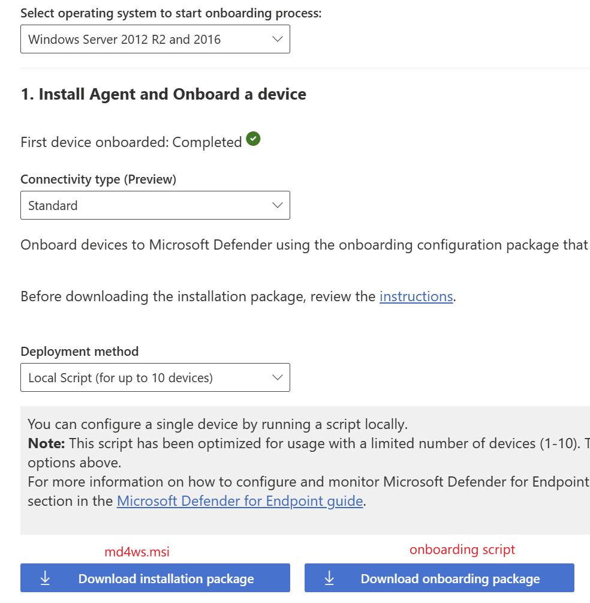
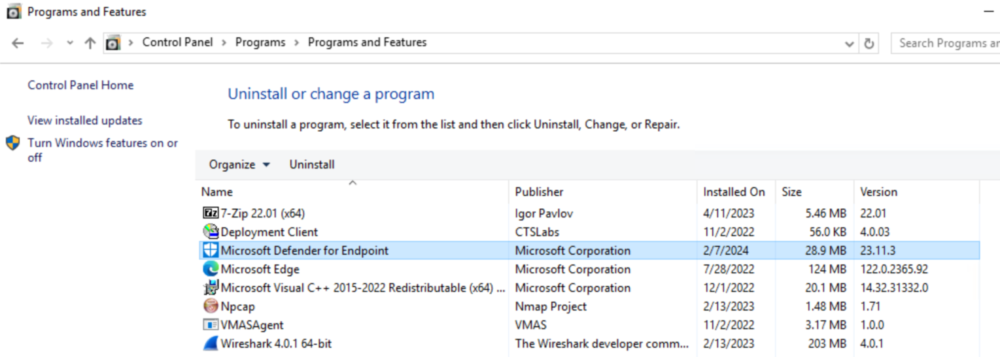

Instructions to onboarding Windows Server 2016 to MDE
1. Make sure following pre-requisites are met from target server:
It's recommended to install the latest available SSU and LCU on the server
The Servicing Stack Update (SSU) from September 14, 2021 or later must be installed
The Latest Cumulative Update (LCU) from September 20, 2018 or later must be installed
Enable the Microsoft Defender Antivirus feature and ensure it's up to date. For more information on enabling Defender Antivirus on Windows Server, see Re-enable Defender Antivirus on Windows Server if it was disabled and Re-enable Defender Antivirus on windows Server if it was uninstalled
Download and install the latest platform version using Windows Update. Alternatively, download the update package manually from the Microsoft Update Catalog
2. Prepare following 2 files for onboarding and copy them to target server
md4ms.msi
onboarding script

3. Run md4ws.msi on target server to install Microsoft Defender for Endpoint package
.

4. Run onboarding script to complete the onboarding process. We should be able to see sense service running after this.